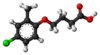

mcpb

Has synonym(s): 2,4-mcpb, 4-(4-chloro-o-tolyloxy)butyric-acid), 4-(4-chloro-2-methylphenoxy)butanoic-acid
Definition: MCPB, 2,4-MCPB, 4-(4-chloro-o-tolyloxy)butyric acid (IUPAC), or 4-(4-chloro-2-methylphenoxy)butanoic acid (CAS) is a phenoxybutyric herbicide. In the United States it is registered for use on pea crops before flowering, for post-emergence control of broadleaf annual and perennial weeds including Canadian thistle, buttercup, mustard, purslane, ragweed, common lambsquarters, pigweed, smartweed, sowthistle, and morning glory. It has low to moderate acute toxicity, with kidney and liver effects as the main hazard concerns. It is not volatile, persistent, or likely to bioconcentrate.
Source: Wikipedia
Wikipedia Page (Something wrong with this association? Let us know.)
Wikidata Page (Something wrong with this association? Let us know.)